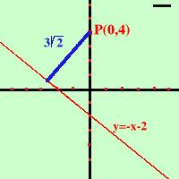

|
E' un problema che potrebbe essere risolto con le nozioni che gia' abbiamo: basta fare
Distanza del punto P(x0,y0) dalla retta y = mx + q formula y0 - mx0 - q d = ---------------------- 
 (1 + m2) (1 + m2)Essendo la distanza sempre positiva se sopra e' piu' sotto scegli il piu', se sopra hai meno sotto prendi meno. In questo modo il risultato sara' sempre positivo Facciamolo anche per la retta in forma implicita Distanza del punto P(x0,y0) dalla retta ax + by + c = 0 formula ax0 + by0 + c d = ----------------------
(a2 + b2)Anche qui se sopra e' piu' sotto scegli il piu', se sopra hai meno sotto prendi meno. In questo modo il risultato sara' sempre positivo Esempio: trovare la distanza fra la retta y = -x - 2 ed il punto P(0,4) Applico la formula: y0 - mx0 - q d = ----------------------
(1 + m2)sapendo che  x0 = 0 y0 = 4 m = -1 q = -2 4 - (-1)·0 - (-2) d = ---------------------- 
 [1 + (-1)2)] [1 + (-1)2)]6 d = ------- = 3 2+ 2Un po' piu' di 4 unita' di misura come puoi controllare dalla figura |

|

|

|

|